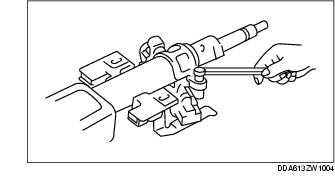

Steering wheel and column removal/installation
- • Handling the air bag module improperly can accidentally deploy the air bag module, which may seriously injure you. Read the service warnings before handling the air bag module. (See SERVICE WARNINGS.) (See SERVICE CAUTIONS.)
1. Remove the clip securing the key interlock cable.
2. Remove in the order indicated in the table.
3. Install in the reverse order of removal.
4. If the steering lock component of a vehicle equipped with the advanced keyless system is replaced, perform the following procedure after installation.
- • Without immobilizer system
- - Transmitter programming (See TRANSMITTER ID CODE REGISTRATION.)
- • With immobilizer system
- - Immobilizer system resetting (See IMMOBILIZER SYSTEM COMPONENT REPLACEMENT/KEY ADDITION AND CLEARING.)

.
|
1
|
Air bag module
|
|
2
|
Lockbolt
|
|
3
|
Steering wheel
(See Steering Wheel Removal Note.)
|
|
4
|
Column cover
|
|
5
|
Clock spring
|
|
6
|
Combination switch
|
|
7
|
Steering shaft cover
|
|
8
|
Steering shaft
|
|
9
|
Steering lock mounting bolt
|
|
10
|
Steering lock component
|
Steering Wheel Removal Note
- • Do not try to remove the steering wheel by hitting the shaft with a hammer. The column will be damaged.
1. Set the wheels in the straight-ahead position.
2. Remove the steering wheel using any commercially available puller.
Steering Lock Mounting Bolt Removal Note
1. Make a groove in the heads of the steering lock mounting bolts using a chisel and hammer.

2. Remove the bolts using a flathead screwdriver.
3. Remove the steering lock.
Steering Lock Mounting Bolt Installation Note
1. Assemble the steering lock to the steering shaft.
2. Verify the operation condition of the steering lock system.
3. Install new steering lock mounting bolts.
4. Tighten the bolts until the heads break off.

Steering Wheel Installation Note
1. Set the wheels in the straight-ahead position, and install the steering wheel.